Tikuvchilik fabrikalari va sexlari uchun ishlab chiqarish, konveyer liniyalari monitoringi, patta (bichuv/tikuv chiptalari) generatsiyasi hamda 199+ ishchilarning ishbay maoshini 100% xatosiz va shaffof hisoblovchi to'liq tizim yo'riqnomasi.
Ushbu varaq fabrikadagi barcha xodimlarning yakuniy ish haqini, olingan avanslarini, jarima va doimiy stajlarini 1 tiyingacha hisoblab beruvchi asosiy sahifadir.
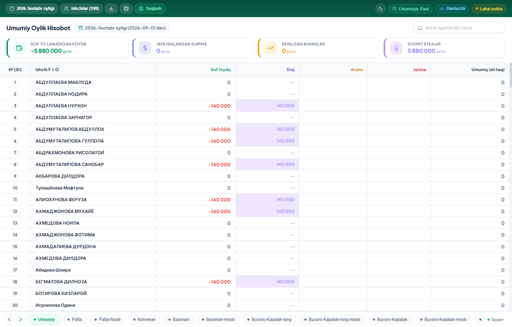
| Ustun / Katak | Nomi & Turi | Kiritiladigan Qiymat | Hisoblash qoidasi va vazifasi |
|---|---|---|---|
| A ustuni | Ishchi ID (Tizim kodi) | Avtomatik (1, 2, 3...) | Muhim! Ushbu katakchaga 2 marta tez bosilsa (Double-click), ushbu ishchining shaxsiy kartochkasi ochiladi. |
| B ustuni | Ishchilar F.I.SH | Xodimning ismi-sharifi | Ishchilar ro'yxatidan avtomatik olinadi, ustiga bosilganda yuqori Formula satrida ko'rinadi. |
| C ustuni | Qo'lga Tegadi (Sof Maosh) | Avtomatik Formula: =G-F-E-D |
Ishchining jami ishlagan summasidan avans va jarimalar chegirilib, staj bonusi qo'shilgan holda unga beriladigan sof pul. |
| D ustuni | Doimiy Staj | So'mda (masalan: 140,000) | Ishchiga fabrikada uzoq ishlagani uchun beriladigan kafolatlangan bonus. Oylik davr yopilganda o'chmaydi, saqlanadi. |
| E ustuni | Avans (Kiritiladigan Input) | Operator kiritadi (masalan: 500000) | Oy davomida ishchiga berilgan naqd yoki kartaga tashlangan bo'nak (avans). Yozilishi bilan C ustundagi pul darhol kamayadi. |
| F ustuni | Jarima (Kiritiladigan Input) | Operator kiritadi (masalan: 50000) | Brak yoki qoidabuzarlik uchun ushlab qolinadigan jarima summasi. |
| G ustuni | Jami Ishlagani | Avtomatik Summa | Ishchi barcha modellarning barcha operatsiyalaridan jami qancha pul ishlab topgani (H + I + J + ...). |
| H, I, J... | Modellar Kesimi (Basiman, Polo...) | Avtomatik to'planadi | Har bir modeldan ushbu tikuvchi aynan qancha summa ishlagani ko'rinadi. |
C12) va ichidagi jonli matematik formulasi chiqadi.Bichuv sexidan chiqqan mato partiyalarini ro'yxatga olish, razmerlar bo'yicha patta sonlarini kiritish va bitta tugma bilan termo-chek qog'ozlarini chop etish bo'limi.
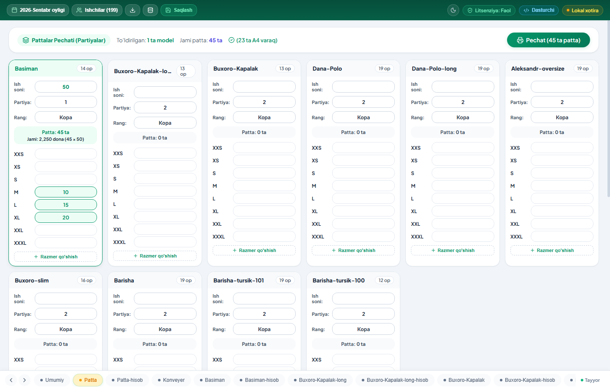
| Maydon / Tugma | Kiritiladigan Qiymat | Bajaradigan vazifasi |
|---|---|---|
| Ish soni: | Raqam (masalan: 50 yoki 100) | Har bir patta (pachka) ichida necha dona kiyim borligi. Masalan 50 kiritilsa, 1 ta patta 50 dona mahsulot hisoblanadi. Kiritilmasa tizim qizil ogohlantirish beradi. |
| Partiya raqami: | Raqam (masalan: 101) | Tizim avtomatik navbatdagi unikal partiya raqamini qo'yadi. Agar xohlasangiz qo'lda o'zgartirish mumkin. |
| Rangi: | Matn (masalan: Кора, Ок, Сum) | Mato partiyasining rangi. Ushbu rang barcha patta chiptalariga avtomatik yoziladi. |
| Razmerlar (S, M, L, XL...): | Patta soni (masalan: M - 10 ta, L - 15 ta) | Ushbu razmerdan necha dona patta chop etilishi. Tizim avtomatik 10 ta patta × 50 dona = 500 dona ish deb hisoblab beradi. |
| + Razmer qo'shish | Maxsus tugma | Yangi o'lcham kerak bo'lsa (masalan 6XL, 7XL yoki bolalar razmerlari), tizimga darhol yangi razmer ustuni qo'shadi. |
| 🖨️ Pechat Tugmasi | Boshqaruv tugmasi | Kamida bitta model to'ldirilgach, yashil rangda faollashadi. Bosilganda pechat oynasi ochiladi va barcha chiptalar chop etiladi. |
Termo-printer (kassir cheki formati) yoki standart A4 qog'oz formatiga moslashtirilgan, operatsiyalar ro'yxati va tartib raqami aks etgan chiroyli chiptalar.
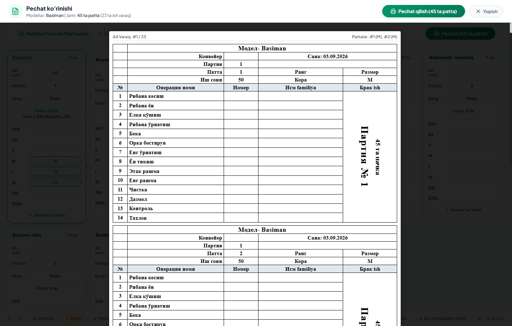
Chop etilgan partiyalar bilan tikuvchilar tomonidan amalda topshirilgan pattalarni solishtirish, qolib ketgan chiptalarni va yo'qotishlarni aniqlash bo'limi.
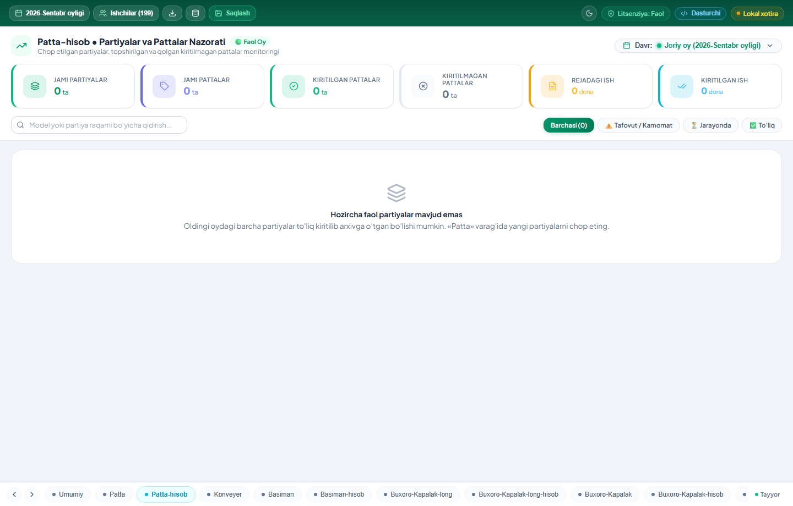
| Holat / Filtr | Indikator Rangi | Nimani bildiradi? |
|---|---|---|
| 🟢 To'liq Yopilgan | Yashil belgi | Ushbu partiyadagi barcha pattalar (100%) tikuvchilar tomonidan tikilib topshirilgan va hisob-kitobi yopilgan. |
| 🟡 Jarayonda | Sariq belgi | Partiya hozir konveyerda tikilmoqda, pattalar qisman topshirilmoqda. |
| 🔴 Farq bor (Mismatch) | Qizil ogohlantirish | Eng muhim audit! Qaysidir patta yo'qolgan, topshirilmay qolib ketgan yoki sonida nomuvofiqlik borligini ko'rsatadi. |
| 🔎 Qidiruv Paneli | Matnli input | Partiya raqami yoki model nomi bo'yicha kerakli partiyani 1 soniyada topib beradi. |
| 📁 Arxivni Ko'rish | Oylar menyusi | Oldingi oylardagi partiyalarni ochib, o'sha oyda nimalar tikilganini tekshirish. |
Fabrikadagi barcha konveyerlarning (1, 2, 3...) kunlik va partiyaviy unumdorligini, qaysi liniya qancha mahsulot chiqarganini ko'rsatuvchi interaktiv monitoring paneli.
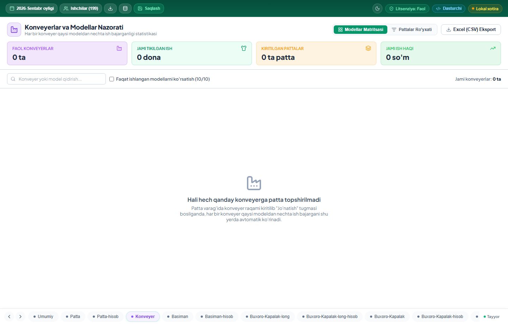
Tikuvchilar tikib bo'lib olib kelgan qog'oz chiptalarni operator tomonidan soniyalarda bazaga kiritish va xodimlarning hisobiga yozish sahifasi.
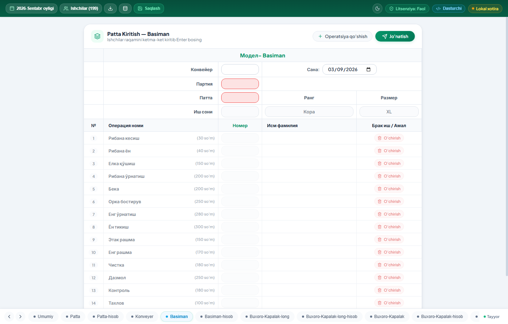
| Maydon / Input | Nima kiritiladi? | Avtomatika va himoya qoidalari |
|---|---|---|
| Sana (Date): | Sana (YYYY-MM-DD) | Bugungi sana avtomatik turadi, xohlagan sanaga o'zgartirish mumkin. |
| Konveyer: | Konveyer raqami (1, 2...) | Ish qaysi konveyerda tikilganini bildiradi. |
| Partiya (Party): | Partiya raqami (masalan: 6632) | Agar bu partiya bazada bo'lmasa yoki boshqa modelga tegishli bo'lsa, tizim qizil xatolik bilan bloklaydi! |
| Patta raqami: | Chipta tartib raqami (1, 2...) | Patta raqami kiritilishi bilan uning Rangi, Razmeri va Soni avtomatik chiqadi! |
| Ishchi ID (Operatsiyalar): | Ishchi raqami (masalan: 5, 12, 45) | Har bir operatsiyaga ishchi ID si yoziladi. Yozilishi bilan yonida ishchining to'liq ismi chiqadi (xato yozishning oldi olinadi). |
| 🚀 Jo'natish Tugmasi | Tasdiqlash tugmasi | Bosilganda barcha ishchilarning hisobiga operatsiya pullari avtomatik yoziladi va forma keyingi patta uchun tozanadi. |
Ushbu model bo'yicha har bir operatsiyaning donabay narxi (stavkasi) va har bir xodim qaysi operatsiyadan qancha dona tikkanini ko'rsatuvchi master varaq.
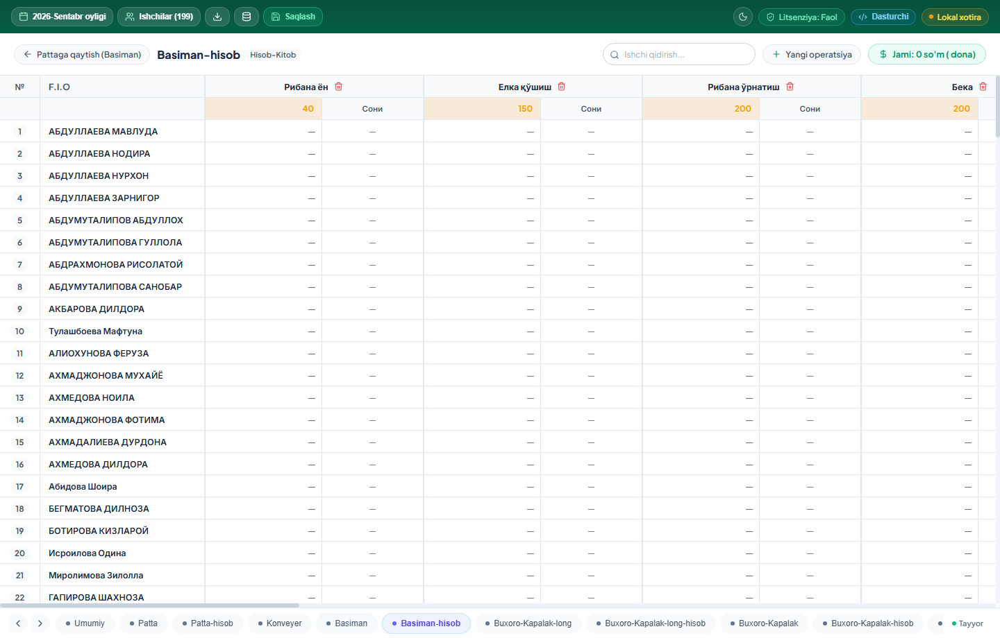
Korxona xodimlarini ro'yxatdan o'tkazish, ularga unikal ID berish, lavozimlarini belgilash va oylik staj bonuslarini kiritish markazi.
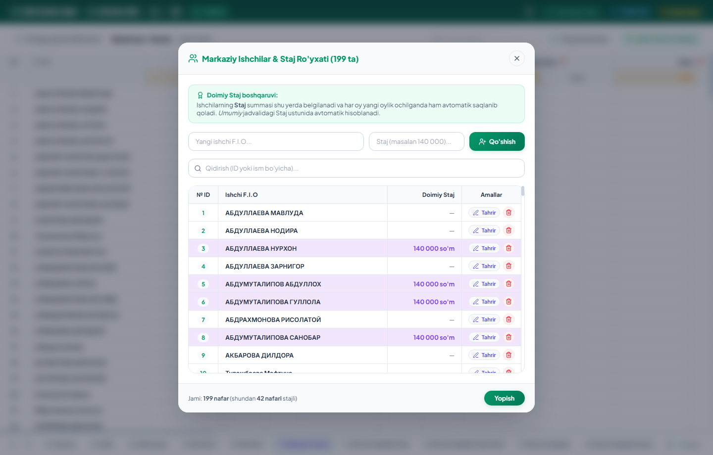
Ishchi bilan oylik hisob-kitob bo'yicha har qanday savol tug'ilganda, uning bajargan har bir operatsiyasini, qaysi konveyerda, qaysi partiyada va qaysi soatda tikkanini ko'rsatib beruvchi shaxsiy dosye.
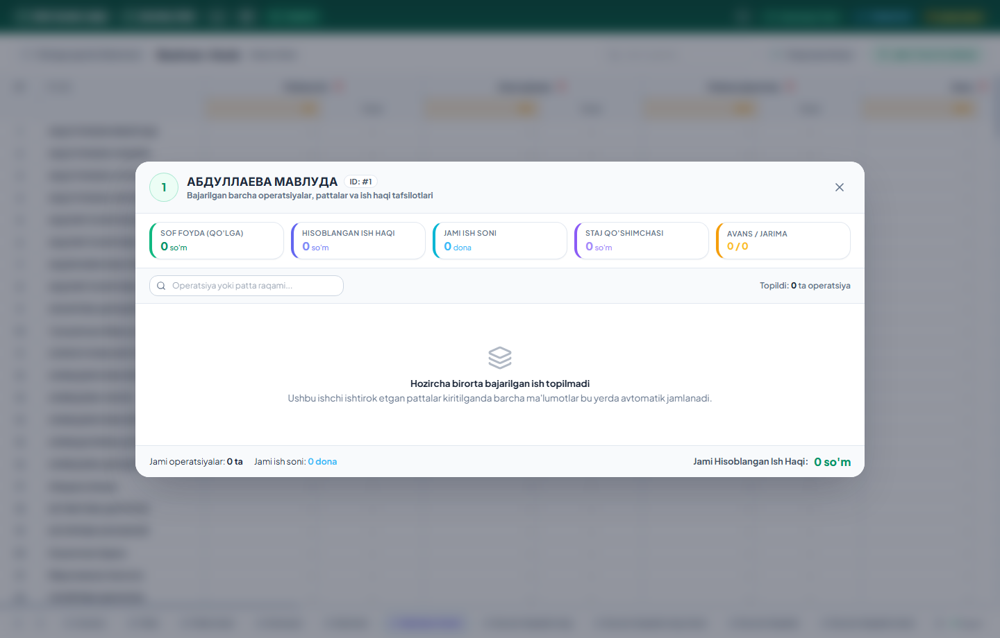
Har oy yakunlanganda bitta tugma bilan oyni yopish, barcha hisoblarni arxivga muhrlash va yangi oyni toza balans bilan boshlash oynasi.
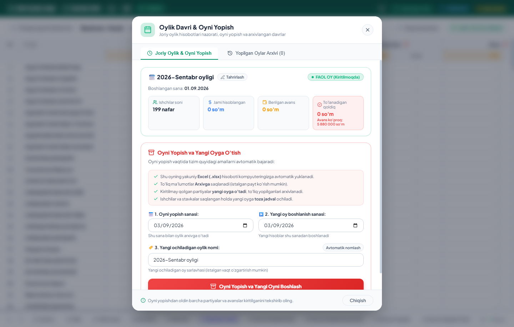
Kompyuter o'chib qolsa, nosozlik bo'lsa yoki tasodifan biror ma'lumot o'chib ketsa ham, barcha hisobotlarni 1 soniyada qaytarib beruvchi avtomatik zaxira tizimi.
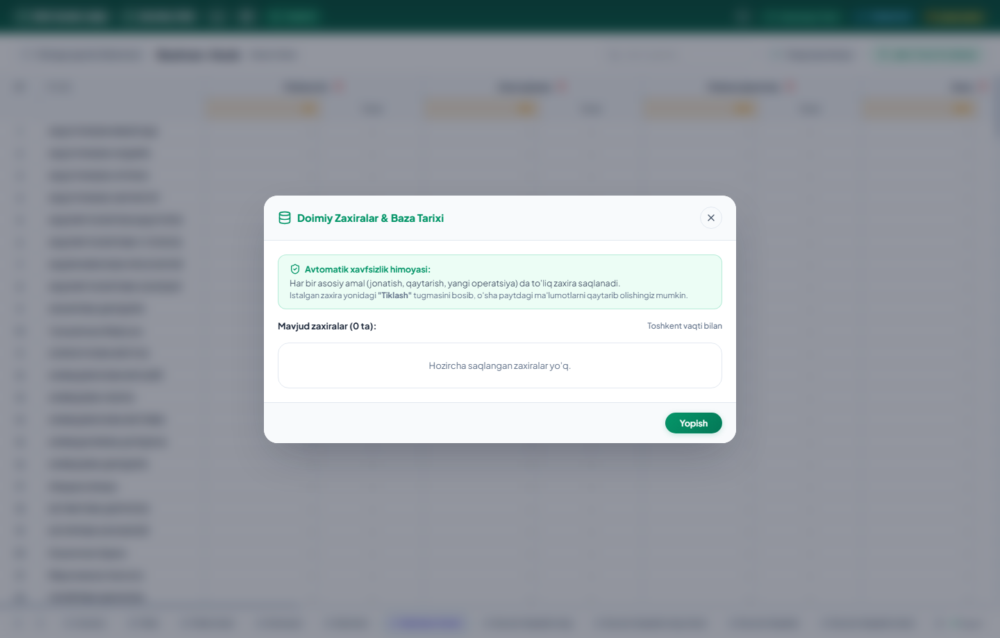
Buxoro_Hisob_Oxirgi.xlsx fayliga ham saqlab boradi.Korxonaga yangi buyurtma yoki yangi kiyim modeli kelganda, uning barcha operatsiyalari va stavkalarini kiritib tizimga ulash ustasi.
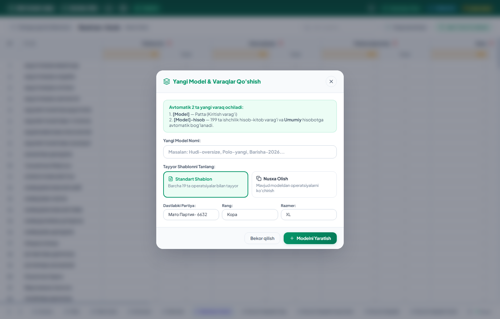
| Maydon / Input | Misol | Vazifasi |
|---|---|---|
| Model nomi: | Polo Futbolka Long | Mahsulotning nomi. Ushbu nom bilan pastda yangi 2 ta varaq ochiladi. |
| Mato Partiyasi & Rang: | 6632 / Qora | Boshlang'ich partiya raqami va rangi. |
| Operatsiyalar: | Yoqa tikish (120 so'm) | Kiyim tikilishidagi barcha operatsiyalar ro'yxati va ularning donabay ish haqi narxi belgilanadi. |
| Saqlash | Yaratish tugmasi | Dasturda bir zumda yangi kiyim modeli uchun barcha jadvallar va formulalar tayyor bo'ladi. |
«Novda Hisob-Kitob» tizimi fabrikangiz hisob-kitobini o'g'riliklardan, xatoliklardan va ortiqcha to'lovlardan 100% himoya qiladi hamda xodimlarning ishonchini oshiradi.